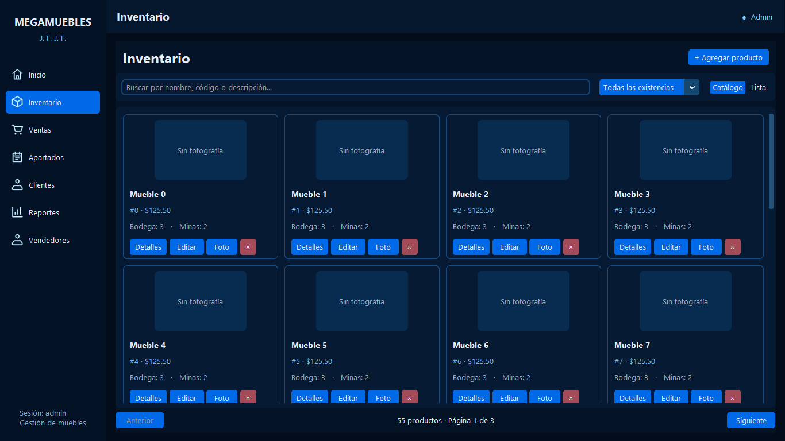
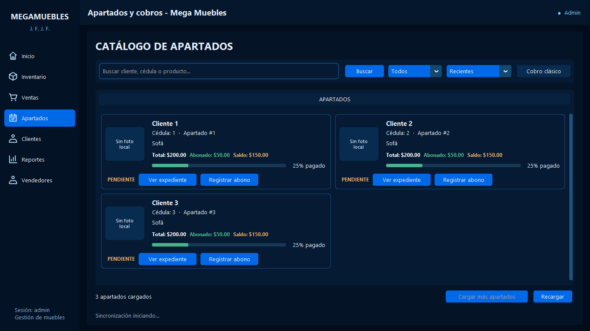
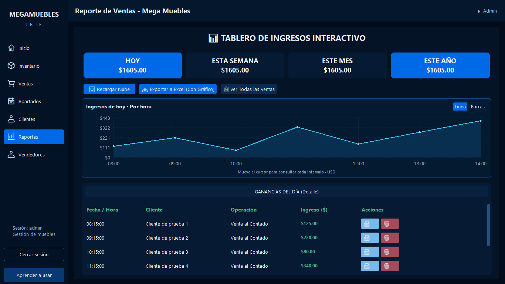
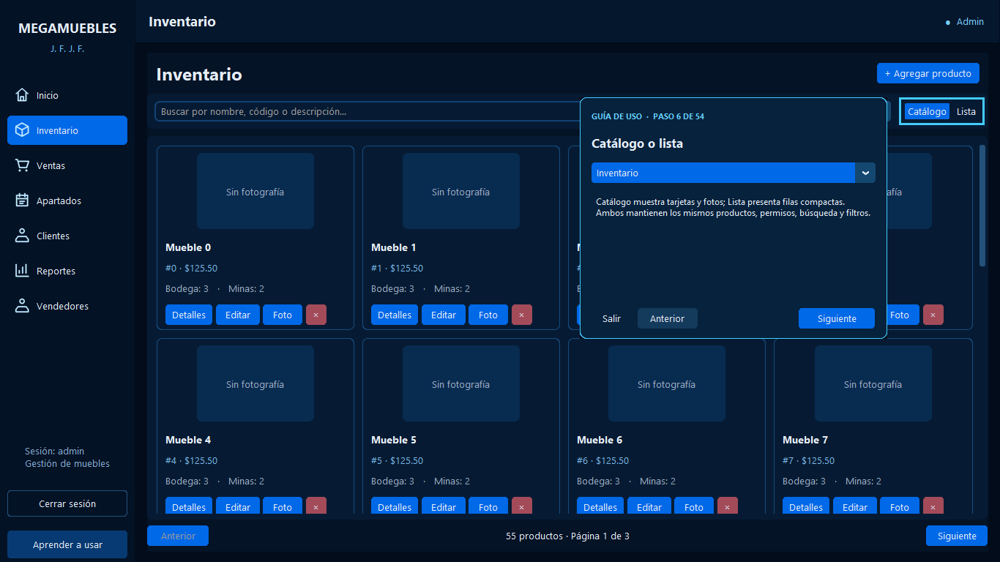
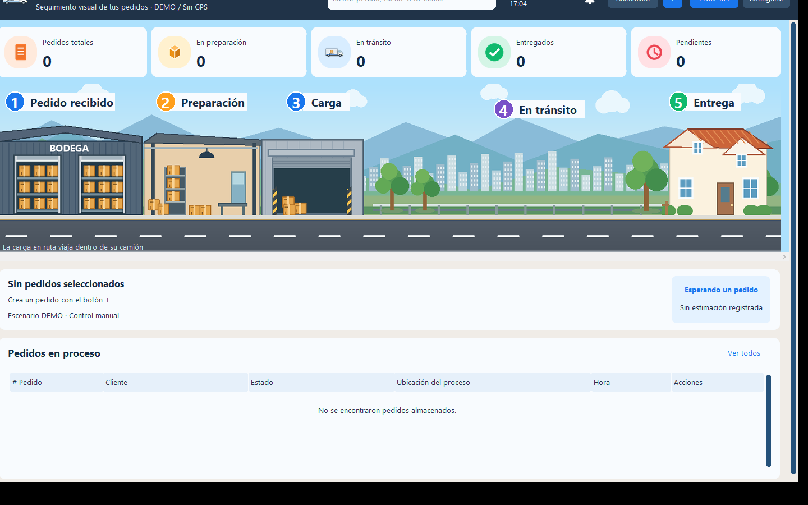

Saltar al contenido
Saltar al contenidoMEGAMUEBLES
Sistema de escritorio para organizar un negocio de muebles: catálogo e inventario, ventas, apartados y seguimiento de abonos y saldos, desde un mismo entorno de trabajo.
 Ampliar imagen
Ampliar imagenEl proyecto
Aplicación de escritorio orientada a las operaciones comerciales de una tienda de muebles. Reúne el catálogo visual, el inventario, las ventas y los apartados en un mismo entorno de trabajo.
Permite seguir el recorrido de un producto desde su consulta y venta hasta los abonos de un apartado y su saldo pendiente. La búsqueda de productos y clientes, los comprobantes y los permisos por rol ayudan a organizar ese trabajo sin repartirlo entre ventanas independientes.
Funciones principales
- Inventario visual con búsqueda y paginación
- Ventas y comprobantes imprimibles
- Apartados, abonos y seguimiento de saldo
- Roles de administración y vendedores
- Suscripción a cambios de apartados y navegación integrada
Galería del proyecto
6 imágenes · en el orden seleccionado
Selecciona una imagen para ampliarla. Usa las flechas para recorrer la galería.
Ampliar ↗

Ampliar ↗

Ampliar ↗

Ampliar ↗

Ampliar ↗

Ampliar ↗EN LA PRÁCTICA
De la consulta al seguimiento
- 1
Buscar un producto en el inventario visual.
- 2
Organizar la venta o el apartado desde el módulo correspondiente.
- 3
Consultar el saldo, registrar abonos y revisar reportes.
Las imágenes proceden de pruebas. El módulo de logística mostrado es una demostración.
Abre primero el gestor local con python tools/manage_media.py.